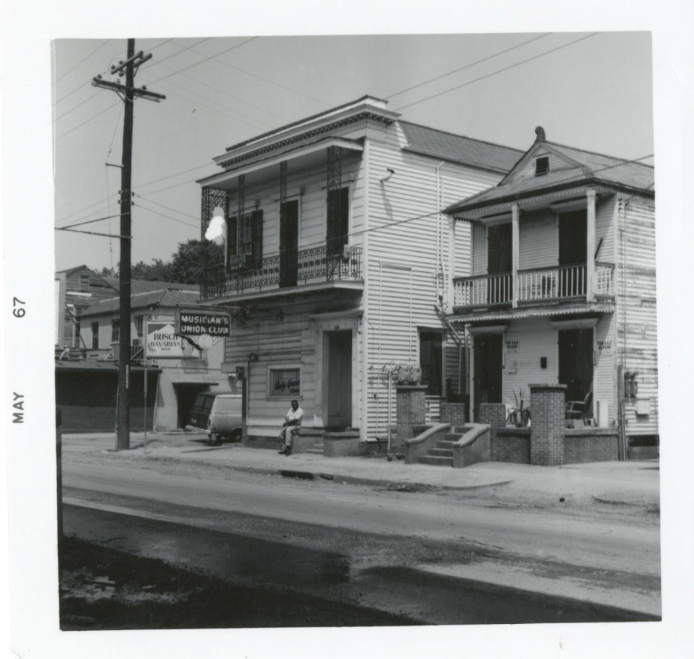

Local 496 Project
The Local 496 Membership Directory is the official roster of the Local 496 labor union. Created in the 1940s, it includes the names, addresses and instruments of the union members from the one-time segregated African-American chapter of the New Orleans jazz musicians’ union. While the chapter merged with the white musicians’ chapter in 1969, the Directory is a unique document that helps identify a cohesive and interrelated community of musicians. In collaboration with Tulane University’s Hogan Jazz Archive, the Semantic Lab transformed this static list into an expanded knowledge graph that will support and further jazz and other historical research in significant ways.
Supported by New Orleans Jazz & Heritage Foundation, Community Partnership Grant, Jazz & Heritage Archive: Documentation and Preservation grant program (2019-2020).
Map
Loading the map…
Hold ⌘ or Ctrl and scroll to zoom
Map data © OpenStreetMap contributors
Drag to move, pinch or use the buttons to zoom, and select a dot to see who lived there. The map is showing only the members matched by the directory search below.
Directory
Loading the directory…
No members match that search.